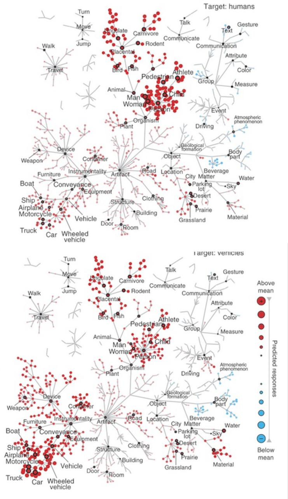
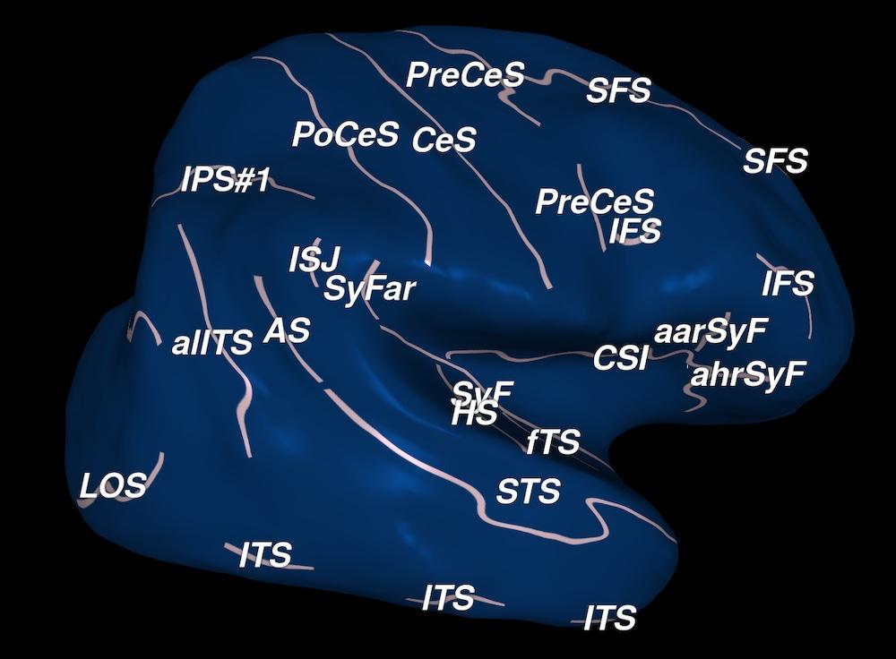
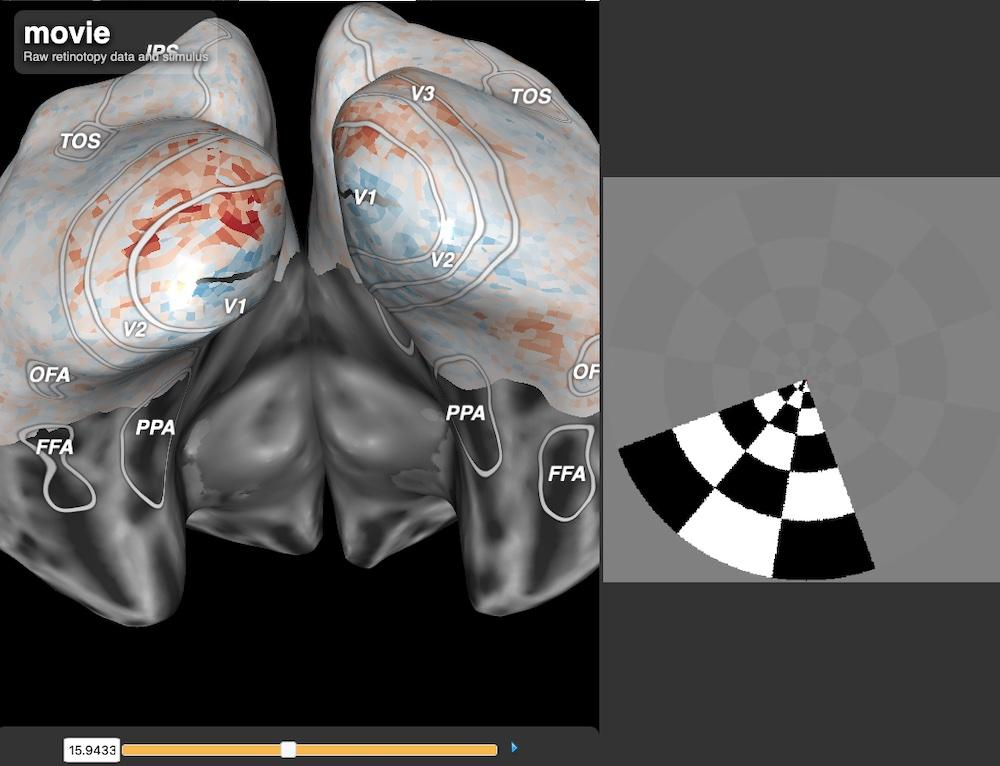

BrainViewers
This page collects public brain viewers that you can use to interact with the data and results from many of our published studies. To reach the brain viewer for any topic, just click on the highlighted hyperlink. Please note that these brain viewers do not run well on cell phones, you will have the best experience with a computer or a tablet.

The representation of semantic information across human cerebral
cortex during listening versus reading is invariant to stimulus
modality (Deniz et al., J. Neuroscience, 2019).
In this experiment, people listened to and read stories from the
Moth Radio Hour while brain activity was recorded. Voxelwise
modeling was used to determine how each individual brain location
responded to semantic concepts in the stories during listening and
reading, separately. The interactive brain viewer shows how these
concepts are mapped across the cortical surface for both modalities
(listening and reading). The colors on the cortical map indicate the
semantic concepts that will elicit brain activity at that location
during listening and reading.

Human scene-selective areas represent the 3D configuration of
surfaces (Lescroart et al., Neuron, 2018).
In this experiment people viewed rendered animations depicting
objects placed in scenes. The MRI data were analyzed by
voxelwise modeling to recover the cortical representation of
low-level features and 3D structure. This demo shows how surface
position, distance and orientation are mapped across the
cortical surface.

Natural speech reveals the semantic maps that tile human
cerebral cortex (Huth et al., Nature, 2016).
In this experiment people passively listened to stories from the
Moth Radio Hour while brain activity was recorded. Voxelwise
modeling was used to determine how each individual brain location
responded to 985 distinct semantic concepts in the stories. The
demo shows how these concepts are mapped across the cortical surface.
The colors on the cortical map show indicate the semantic concepts
that will elicit brain activity at that location. The word cloud at
right shows words that the model predicts would evoke the largest
brain response at the indicated location. Follow the tutorial at
upper right to find out more about this tool.

Attention during natural vision warps semantic representations
across the human brain (Cukur et al., Nature Neuroscience, 2013).
In this experiment people passively watched movies while monitoring
for the presence of either “humans” or “vehicles”, and in a neutral
condition. Voxelwise modeling was used to determine how each brain
location responded to 985 distinct categories of objects and actions
in the movies, and how these responses were modulated by attention.
This brain viewer allows you to view data collected under the three
different conditions (left click “Passive Viewing”, “Attending to
Humans” or “Attending to Vehicles”). By selecting single brain
locations (left click on the brain) or single categories (left
click on the WordNet tree), you can see how tuning changes under
different states of attention.
We created the following two brain viewers for educiational purposes.

Cortical anatomy viewer.
In order to be able to visualize the complete cortical surface, neuroscientists
often work with inflated or flattened cortical maps. However, it can be difficult
to orient onself correctly when inspecting these maps. This viewer provides labels
for many of the most commonly referenced sulci and gyri. By switching between
folded, inflated and flattened views one can get a good sense of how important
cortical landmarks vary across these different views.

Retinotopy viewer.
The human brain contains many different retinotopic maps, and these maps are
one of the primary tools used to parcellate the visual system. Given the large
number of maps and their complicated spatial relationships to one another, it
is often difficult for students to fully understand how the maps are related.
This viewer shows real-time functional activity evoked in a retinal mapping
experiment. By identifying the angular and eccentricity functional maps one can
gain a good understanding of retinotopic organization.